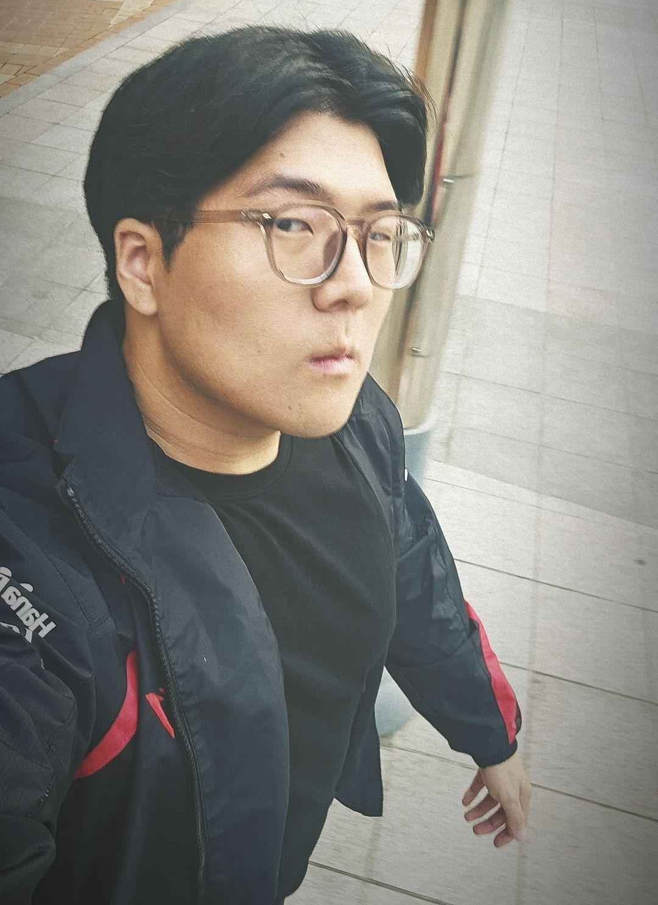

Brandon Young Lee
 4189 Baverton Drive, Suwanee, Georgia951-733-3323
waterhorse1215@gmail.com
Profile
As a Computer Science student with a solid academic foundation, I’ve built a strong technical background in software development, algorithms, and system design. My journey combines hands-on leadership with global perspective: serving as a Resident Assistant at the University of Georgia, I’ve led diverse communities, managed crises, and developed high-level communication and conflict-resolution skills.
Through immersive study abroad programs in Costa Rica and South Korea, I’ve conducted ecological field research, collaborated with international peers, and expanded my understanding of global systems and cultural dynamics. These experiences have sharpened my ability to adapt quickly, solve complex problems under pressure, and lead with clarity. I’m now focused on applying these skills to build clean, efficient code and scalable software solutions that solve real-world challenges.
Work and Academic Experience
University of Georgia – Resident Assistant
- Mentored and supported a diverse community of 40+ residents, promoting academic success, emotional well-being, and inclusive values.
- Created and executed over 10 educational and social programs that increased resident engagement and improved retention.
- Responded to crises including health emergencies and conflicts, collaborating with campus police, counseling, and housing staff.
- Mediated disputes and enforced policies with empathy and professionalism, ensuring a respectful and safe living environment.
- Improved crisis communication and leadership skills through 50+ hours of training and weekly team briefings.
- Balanced administrative duties with mentorship and community-building responsibilities.
Yonsei University – Sinchon, Seoul
- Participated in a competitive academic exchange program focused on global perspectives in technology and culture.
- Completed coursework in Artificial Intelligence and Healthcare Engineering.
- Engaged in cross-cultural dialogue with students from 15+ countries, expanding global awareness and adaptability.
- Explored South Korean innovation ecosystems, attending seminars and networking events with local entrepreneurs and professors.
- Strengthened problem-solving and presentation skills through group projects and case study discussions.
Study Abroad – In Partnership with the University of Costa Rica
- Participated in a field-based ecological research program exploring Costa Rica's diverse ecosystems and wildlife.
- Conducted studies in tropical rainforests, premontane rainforests, cloud forests, and tropical dry forests, gaining hands-on experience with ecological research methods.
- Examined biodiversity and conservation challenges, focusing on amphibians, reptiles, mammals, birds, and marine species such as leatherback sea turtles.
- Enhanced environmental awareness and global perspectives while collaborating with an international group of students and researchers.
Education
Bachelor of Computer Science – University of Georgia
School of Computing | GPA: 3.55 / 4.0 Cum Laude (2021 – 2025)
Capstone Project – Cinema E-Booking System
Role: Team Lead & Full-Stack Developer
Technologies: TypeScript, Java, JavaScript, CSS
- Developed a full-stack, web-based cinema booking platform to streamline the movie ticketing experience.
- Enabled users to browse movie listings, view showtimes, select seats, and book tickets securely online.
- Contributed to both front-end and back-end development, ensuring a responsive UI and a scalable backend.
- Led a collaborative team effort, overseeing planning, task delegation, and successful delivery of the final product.